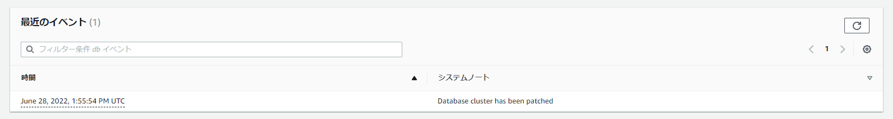

Aurora PostgreSQLにパッチを適用した際のダウンタイムログ
パッチの中身に依存するので参考までに。この時のパッチ適用の実質的なダウンタイムは約7秒だった。
スクリプト
import psycopg2
import psycopg2.extras
import time
import datetime
for i in range(20000):
try:
dt_now = datetime.datetime.now()
conn = psycopg2.connect("host=auroraserverlessv2.cluster-cm678nkt5thr.ap-northeast-1.rds.amazonaws.com port=5432 dbname=postgres user=postgres password=postgres")
cur = conn.cursor()
cur.execute("insert into zdptest (time) values (current_timestamp)")
print(dt_now)
time.sleep(1)
conn.commit()
cur.close()
conn.close()
except:
pass
ログ
2022-06-28 13:52:53 UTC::@:[31196]:LOG: starting PostgreSQL 13.6 on aarch64-unknown-linux-gnu, compiled by aarch64-unknown-linux-gnu-gcc (GCC) 7.4.0, 64-bit
2022-06-28 13:52:53 UTC::@:[31196]:LOG: listening on IPv4 address "0.0.0.0", port 5432
2022-06-28 13:52:53 UTC::@:[31196]:LOG: listening on IPv6 address "::", port 5432
2022-06-28 13:52:53 UTC::@:[31196]:LOG: listening on Unix socket "/tmp/.s.PGSQL.5432"
2022-06-28 13:52:53 UTC::@:[31196]:LOG: Waiting for runtime initialization complete...
2022-06-28 13:52:54 UTC:[local]:rdsadmin@rdsadmin:[31354]:FATAL: the database system is starting up
2022-06-28 13:52:54 UTC::@:[31352]:LOG: database system was interrupted; last known up at 2022-06-28 13:52:19 UTC
2022-06-28 13:52:54 UTC:10.0.1.31(34296):postgres@postgres:[31353]:FATAL: the database system is starting up
2022-06-28 13:52:54 UTC:10.0.1.31(34298):postgres@postgres:[31368]:FATAL: the database system is starting up
2022-06-28 13:52:54 UTC:10.0.1.31(34300):postgres@postgres:[31382]:FATAL: the database system is starting up
2022-06-28 13:52:54 UTC:10.0.1.31(34302):postgres@postgres:[31386]:FATAL: the database system is starting up
2022-06-28 13:52:54 UTC:10.0.1.31(34304):postgres@postgres:[31402]:FATAL: the database system is starting up
2022-06-28 13:52:54 UTC:10.0.1.31(34306):postgres@postgres:[31440]:FATAL: the database system is starting up
2022-06-28 13:52:54 UTC:10.0.1.31(34308):postgres@postgres:[31448]:FATAL: the database system is starting up
2022-06-28 13:52:54 UTC:10.0.1.31(34310):postgres@postgres:[31457]:FATAL: the database system is starting up
2022-06-28 13:52:55 UTC:10.0.1.31(34312):postgres@postgres:[31467]:FATAL: the database system is starting up
2022-06-28 13:52:55 UTC:10.0.1.31(34314):postgres@postgres:[31478]:FATAL: the database system is starting up
2022-06-28 13:52:55 UTC::@:[31196]:LOG: database system is ready to accept connections
2022-06-28 13:55:10 UTC::@:[31196]:LOG: received SIGHUP, reloading configuration files
2022-06-28 13:55:10 UTC::@:[31196]:LOG: skipping missing configuration file "/rdsdbdata/config/recovery.conf"
2022-06-28 13:55:10 UTC::@:[31196]:LOG: skipping missing configuration file "/rdsdbdata/db/postgresql.auto.conf"
2022-06-28 13:55:10 UTC::@:[31196]:LOG: parameter "unix_socket_permissions" cannot be changed without restarting the server
2022-06-28 13:55:10 UTC::@:[31196]:LOG: parameter "shared_buffers" cannot be changed without restarting the server
2022-06-28 13:55:10 UTC::@:[31196]:LOG: parameter "apg_critical_insights_enabled" changed to "on"
2022-06-28 13:55:10 UTC::@:[31196]:LOG: configuration file "/rdsdbdata/config/postgresql.conf" contains errors; unaffected changes were applied
2022-06-28 13:55:10 UTC::@:[31490]:LOG: skipping missing configuration file "/rdsdbdata/config/recovery.conf"
2022-06-28 13:55:10 UTC::@:[31486]:LOG: skipping missing configuration file "/rdsdbdata/config/recovery.conf"
2022-06-28 13:55:10 UTC::@:[31486]:LOG: skipping missing configuration file "/rdsdbdata/db/postgresql.auto.conf"
2022-06-28 13:55:10 UTC::@:[31490]:LOG: skipping missing configuration file "/rdsdbdata/db/postgresql.auto.conf"
2022-06-28 13:55:10 UTC::@:[31262]:LOG: skipping missing configuration file "/rdsdbdata/config/recovery.conf"
2022-06-28 13:55:10 UTC::@:[31262]:LOG: skipping missing configuration file "/rdsdbdata/db/postgresql.auto.conf"
2022-06-28 13:55:10 UTC::@:[31489]:LOG: skipping missing configuration file "/rdsdbdata/config/recovery.conf"
2022-06-28 13:55:10 UTC::@:[31489]:LOG: skipping missing configuration file "/rdsdbdata/db/postgresql.auto.conf"
2022-06-28 13:55:10 UTC::@:[31226]:LOG: skipping missing configuration file "/rdsdbdata/config/recovery.conf"
2022-06-28 13:55:10 UTC::@:[31226]:LOG: skipping missing configuration file "/rdsdbdata/db/postgresql.auto.conf"
2022-06-28 13:55:10 UTC::@:[31485]:LOG: skipping missing configuration file "/rdsdbdata/config/recovery.conf"
2022-06-28 13:55:10 UTC::@:[31485]:LOG: skipping missing configuration file "/rdsdbdata/db/postgresql.auto.conf"
2022-06-28 13:55:10 UTC::@:[31487]:LOG: skipping missing configuration file "/rdsdbdata/config/recovery.conf"
2022-06-28 13:55:10 UTC::@:[31487]:LOG: skipping missing configuration file "/rdsdbdata/db/postgresql.auto.conf"
2022-06-28 13:55:10 UTC::@:[31492]:LOG: skipping missing configuration file "/rdsdbdata/config/recovery.conf"
2022-06-28 13:55:10 UTC::@:[31492]:LOG: skipping missing configuration file "/rdsdbdata/db/postgresql.auto.conf"
2022-06-28 13:55:10 UTC::@:[31488]:LOG: skipping missing configuration file "/rdsdbdata/config/recovery.conf"
2022-06-28 13:55:10 UTC::@:[31488]:LOG: skipping missing configuration file "/rdsdbdata/db/postgresql.auto.conf"
2022-06-28 13:55:10 UTC:10.0.1.31(34600):postgres@postgres:[11434]:LOG: skipping missing configuration file "/rdsdbdata/config/recovery.conf"
2022-06-28 13:55:10 UTC:10.0.1.31(34600):postgres@postgres:[11434]:LOG: skipping missing configuration file "/rdsdbdata/db/postgresql.auto.conf"
2022-06-28 13:55:30 UTC::@:[31196]:LOG: received SIGHUP, reloading configuration files
2022-06-28 13:55:30 UTC::@:[31196]:LOG: skipping missing configuration file "/rdsdbdata/config/recovery.conf"
2022-06-28 13:55:30 UTC::@:[31196]:LOG: skipping missing configuration file "/rdsdbdata/db/postgresql.auto.conf"
2022-06-28 13:55:30 UTC::@:[31196]:LOG: parameter "unix_socket_permissions" cannot be changed without restarting the server
2022-06-28 13:55:30 UTC::@:[31196]:LOG: parameter "shared_buffers" cannot be changed without restarting the server
2022-06-28 13:55:30 UTC::@:[31196]:LOG: parameter "rds.enable_buffer_pin_conflict_forking" changed to "on"
2022-06-28 13:55:30 UTC::@:[31196]:LOG: parameter "rds.apg_space_reclaim_thread_enabled" changed to "on"
2022-06-28 13:55:30 UTC::@:[31196]:LOG: configuration file "/rdsdbdata/config/postgresql.conf" contains errors; unaffected changes were applied
2022-06-28 13:55:30 UTC::@:[31262]:LOG: skipping missing configuration file "/rdsdbdata/config/recovery.conf"
2022-06-28 13:55:30 UTC::@:[31262]:LOG: skipping missing configuration file "/rdsdbdata/db/postgresql.auto.conf"
2022-06-28 13:55:30 UTC::@:[31226]:LOG: skipping missing configuration file "/rdsdbdata/config/recovery.conf"
2022-06-28 13:55:30 UTC::@:[31226]:LOG: skipping missing configuration file "/rdsdbdata/db/postgresql.auto.conf"
2022-06-28 13:55:30 UTC::@:[31487]:LOG: skipping missing configuration file "/rdsdbdata/config/recovery.conf"
2022-06-28 13:55:30 UTC::@:[31487]:LOG: skipping missing configuration file "/rdsdbdata/db/postgresql.auto.conf"
2022-06-28 13:55:30 UTC::@:[31488]:LOG: skipping missing configuration file "/rdsdbdata/config/recovery.conf"
2022-06-28 13:55:30 UTC::@:[31488]:LOG: skipping missing configuration file "/rdsdbdata/db/postgresql.auto.conf"
2022-06-28 13:55:30 UTC::@:[31492]:LOG: skipping missing configuration file "/rdsdbdata/config/recovery.conf"
2022-06-28 13:55:30 UTC::@:[31492]:LOG: skipping missing configuration file "/rdsdbdata/db/postgresql.auto.conf"
2022-06-28 13:55:30 UTC::@:[31489]:LOG: skipping missing configuration file "/rdsdbdata/config/recovery.conf"
2022-06-28 13:55:30 UTC::@:[31489]:LOG: skipping missing configuration file "/rdsdbdata/db/postgresql.auto.conf"
2022-06-28 13:55:30 UTC::@:[31485]:LOG: skipping missing configuration file "/rdsdbdata/config/recovery.conf"
2022-06-28 13:55:30 UTC::@:[31485]:LOG: skipping missing configuration file "/rdsdbdata/db/postgresql.auto.conf"
2022-06-28 13:55:30 UTC::@:[31486]:LOG: skipping missing configuration file "/rdsdbdata/config/recovery.conf"
2022-06-28 13:55:30 UTC::@:[31486]:LOG: skipping missing configuration file "/rdsdbdata/db/postgresql.auto.conf"
2022-06-28 13:55:30 UTC::@:[31490]:LOG: skipping missing configuration file "/rdsdbdata/config/recovery.conf"
2022-06-28 13:55:30 UTC::@:[31490]:LOG: skipping missing configuration file "/rdsdbdata/db/postgresql.auto.conf"
2022-06-28 13:55:30 UTC:10.0.1.31(34640):postgres@postgres:[12957]:LOG: skipping missing configuration file "/rdsdbdata/config/recovery.conf"
2022-06-28 13:55:30 UTC:10.0.1.31(34640):postgres@postgres:[12957]:LOG: skipping missing configuration file "/rdsdbdata/db/postgresql.auto.conf"
テーブル
321 | 2022-06-28 13:52:39.452956
322 | 2022-06-28 13:52:40.483377
323 | 2022-06-28 13:52:41.516449
324 | 2022-06-28 13:52:42.54735
325 | 2022-06-28 13:52:43.579139
326 | 2022-06-28 13:52:44.610785
327 | 2022-06-28 13:52:45.642509
328 | 2022-06-28 13:52:46.673966
329 | 2022-06-28 13:52:47.705797
330 | 2022-06-28 13:52:48.738429 ★←約10秒弱書き込めていない
331 | 2022-06-28 13:52:55.153238
332 | 2022-06-28 13:52:56.194006
333 | 2022-06-28 13:52:57.228373
334 | 2022-06-28 13:52:58.263974
335 | 2022-06-28 13:52:59.317474
336 | 2022-06-28 13:53:00.347215
337 | 2022-06-28 13:53:01.379734
338 | 2022-06-28 13:53:02.417656
339 | 2022-06-28 13:53:03.451107
340 | 2022-06-28 13:53:04.487402
341 | 2022-06-28 13:53:05.522603
342 | 2022-06-28 13:53:06.554656
Auroraクラスタ側のイベント情報

関連しているかもしれない記事
- Aurora PostgreSQLでPostGIS(位置情報）を使用する
- pgAdmin4からAurora PostgreSQLへ踏み台サーバのポートフォワード経由で接続する
- Auroraの各バージョンのサポート期間
- Aurora PostgreSQLのDB監査方式（Database Activity Streams or pgaudit？）
- AWSで東京リージョンから大阪リージョンへのリージョン間のアウトバウンド通信コストを確認